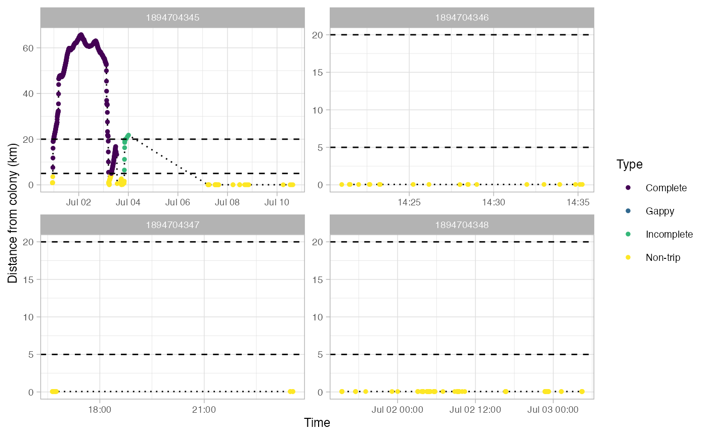
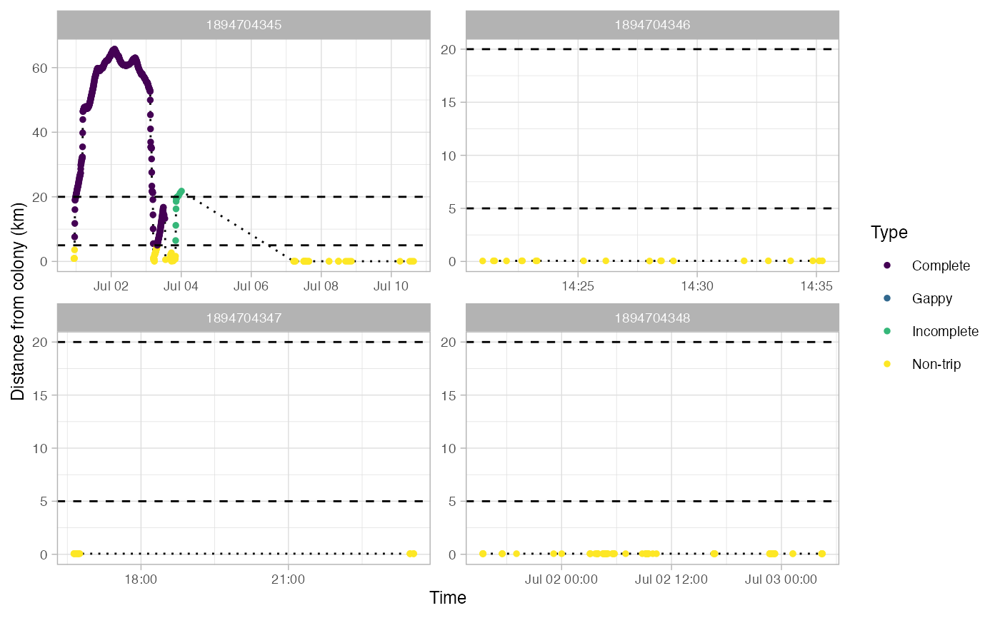

Identify foraging trips in tracking data
opp_get_trips.RdUses criteria related to distance from colony, trip duration, and size of gaps in tracking data to identify and classify trips from a nest or colony. It is a wrapper for track2KBA::tripSplit that applies custom criteria for classifying trips.
Usage
opp_get_trips(
data,
innerBuff,
returnBuff,
duration,
gapTime = 1,
gapDist = 5,
gapLimit = 100,
showPlots = TRUE,
plotsPerPage = 4
)Arguments
- data
Tracking data formated using track2KBA or opp2KBA
- innerBuff
Minimum distance (km) from the colony to be in a trip. Used to label trips as 'Non-trip'. Defaults to 5
- returnBuff
Outer distance (km) to capture trips that start and end away from the colony. Used to label trips as 'Incomplete'. Defaults to 20.
- duration
Minimum trip duration (hrs)
- gapTime
Time (hrs) between successive locations at which trips will be flagged as 'Gappy'. Used in connection with gapDist, such that locations must be farther apart in both time and space to be considered a gap.
- gapDist
Distance (km) between successive locations at which trips will be flagged as 'Gappy'. Used in connection with gapTime, such that locations must be farther apart in both time and space to be considered a gap.
- gapLimit
Maximum time between points to be considered too large to be a contiguous tracking event. Can be used to ensure that deployments on the same animal in different years do not get combined into extra long trips. Defaults to 100 days.
- showPlots
Logical (T/F), should plots showing trip classification by generated?
- plotsPerPage
Numeric indicating the number of individuals to include in a single plot. Defaults to 4.
Details
This returns a SpatialPointDataFrame in a longlat projection. Most fields in the dataframe come from the output of track2KBA::tripSplit. This function also adds fields for:
DiffTime - Difference in hours between locations
DiffDist - Difference in distance between locations
Type - Type of trip: Non-trip, Complete, Incomplete, or Gappy
TripSection - An integer index noting sections of a the trip that are separated by gaps
Gaps in trips are defined as any pair of locations that are farther apart in time than gapTime and farther apart in space than gapDist.
Examples
my_data <- opp_download_data(study = c(1247096889),login = NULL, start_month = NULL,
end_month = NULL,season = NULL)
#> Warning: 0 location(s) is/are removed by removeDuplicatedTimestamps
my_track2kba <- opp2KBA(data = my_data)
my_trips <- opp_get_trips(data = my_track2kba, innerBuff = 5, returnBuff = 20,
duration = 2, gapLimit = 100, gapTime = 2, gapDist = 5,
showPlots = TRUE)
#> Warning: CRS object has comment, which is lost in output; in tests, see
#> https://cran.r-project.org/web/packages/sp/vignettes/CRS_warnings.html
#> Warning: CRS object has comment, which is lost in output; in tests, see
#> https://cran.r-project.org/web/packages/sp/vignettes/CRS_warnings.html
#> Warning: CRS object has comment, which is lost in output; in tests, see
#> https://cran.r-project.org/web/packages/sp/vignettes/CRS_warnings.html
#> Warning: CRS object has comment, which is lost in output; in tests, see
#> https://cran.r-project.org/web/packages/sp/vignettes/CRS_warnings.html
#> Warning: CRS object has comment, which is lost in output; in tests, see
#> https://cran.r-project.org/web/packages/sp/vignettes/CRS_warnings.html
#> Warning: CRS object has comment, which is lost in output; in tests, see
#> https://cran.r-project.org/web/packages/sp/vignettes/CRS_warnings.html
#> Warning: CRS object has comment, which is lost in output; in tests, see
#> https://cran.r-project.org/web/packages/sp/vignettes/CRS_warnings.html
#> Warning: CRS object has comment, which is lost in output; in tests, see
#> https://cran.r-project.org/web/packages/sp/vignettes/CRS_warnings.html
#> Warning: CRS object has comment, which is lost in output; in tests, see
#> https://cran.r-project.org/web/packages/sp/vignettes/CRS_warnings.html
#> Warning: CRS object has comment, which is lost in output; in tests, see
#> https://cran.r-project.org/web/packages/sp/vignettes/CRS_warnings.html
#> Warning: CRS object has comment, which is lost in output; in tests, see
#> https://cran.r-project.org/web/packages/sp/vignettes/CRS_warnings.html
#> Warning: CRS object has comment, which is lost in output; in tests, see
#> https://cran.r-project.org/web/packages/sp/vignettes/CRS_warnings.html
#> Warning: CRS object has comment, which is lost in output; in tests, see
#> https://cran.r-project.org/web/packages/sp/vignettes/CRS_warnings.html
#> Warning: CRS object has comment, which is lost in output; in tests, see
#> https://cran.r-project.org/web/packages/sp/vignettes/CRS_warnings.html
#> Warning: CRS object has comment, which is lost in output; in tests, see
#> https://cran.r-project.org/web/packages/sp/vignettes/CRS_warnings.html
 
#> Use back arrow in plot pane to browse all plots

#> Use back arrow in plot pane to browse all plots